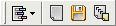

Cette page est remplie avec le résultat du processus de renommage.
En plus de la barre d'outils Fichiers qui est toujours visible, une barre d'outils pour le journal est affichée :

Voici ses commandes :
Lorsqu'un fichier est renommé avec succès, une ligne est ajoutée au journal, spécifiant l'ancien et le nouveau nom du fichier. Elle est écrite en vert.
Dans le cas où le fichier n'a pas été renommé, soit un simple message (en bleu) ou une erreur (en rouge) est affiché.
Le premier cas est causé par un nouveau nom identique à l'ancien (pas besoin de renommer le fichier) ou si le fichier ne contient pas d'info ID3 (pour le renommage des mp3). Cela peut aussi arriver si le fichier source n'existe plus (par exemple si vous l'avez déplacé manuellement).
Les erreurs peuvent être causées par pas mal de choses. Par exemple, si le nouveau nom est déjà utilisé par un autre fichier, si le nom contient des caractères invalides ou si le fichier est bloqué par un programme. En général le message écrit est celui qui est retourné par Windows.
Si vous obtenez un message "The operation completed successfuly" ("Opération terminée avec succès" ou quelque chose comme ça) indiqué comme une erreur, cela signifie que le vrai message d'erreur s'est perdu ou que l'erreur n'a pas été bien détectée. Contactez-moi si vous arrivez à reproduire le problème.
Cela peut être fait via l'option "Socker le journal" de la fenêtre des Options.
Si cette option est activée, après le processus de renommage le contenu du journal sera stocké dans un fichier texte (encodé en UTF-8).
Ce fichier a deux colonnes (délimitées par un caractère de tabulation). La première contient un "v" pour une opération réussie et un "x" pour une erreur. La seconde contient le message.
Si l'option "Ajouter dans le fichier existant" est aussi activée, le fichier ne sera pas écrasé : les nouveaux éléments du journal seront ajoutés à la fin.